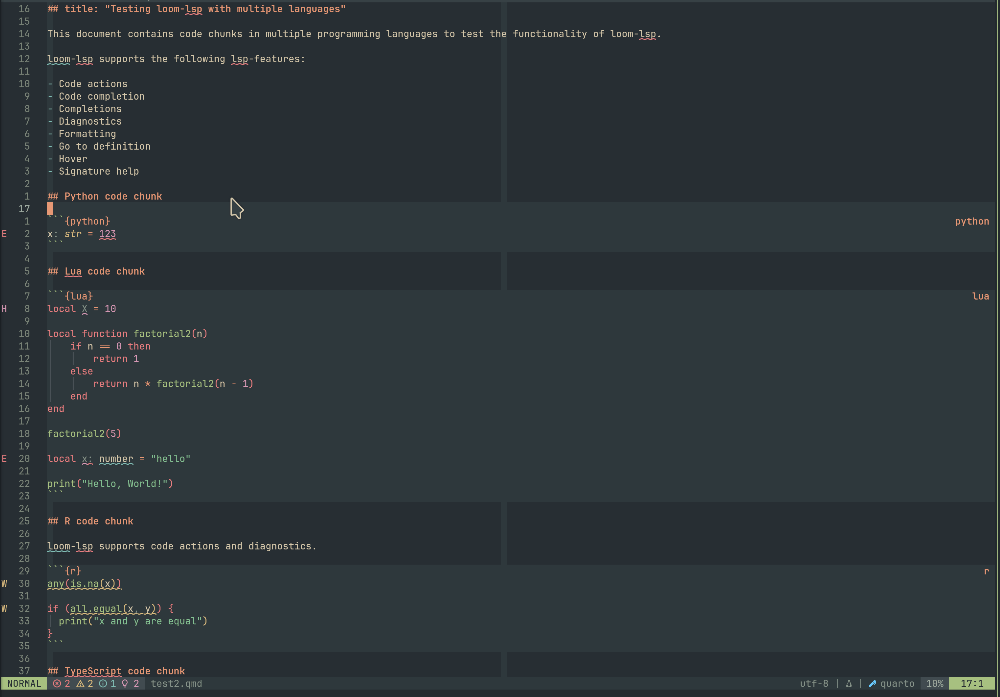

loom-lsp
Install v0.1.0
loom-lsp


[!WARNING] This project is in early development and is not yet ready for production use. Expect breaking changes and incomplete features.
Write Quarto documents and get IDE support for different languages in your notebook at the same time.
Demo

The problem
Quarto .qmd files can include different code chunks (Python, R, markdown, ...) all in one document. The issue is that the editor only understands one language at a time, in the case of a Quarto document, it usually defaults to markdown. This means no autocomplete, no diagnostics, no hover documentation, and no go-to-definition for your preferred language.
What loom-lsp does
loom-lsp is a language server that sits between your editor and your existing language tools. It understands the structure of a Quarto document and routes each part to your preferred LSP server. For example, Python chunks to pyright or pylsp, R chunks to the R language server, typescript to typescript-language-server. Your editor talks to one server, loom-lsp handles the rest.
Installation
From pre-built binaries
Pre-built binaries are available for the following platforms on the Releases page:
| Platform | Target triple |
|---|---|
| macOS (ARM) | aarch64-apple-darwin |
| macOS (Intel) | x86_64-apple-darwin |
| Linux (x86_64) | x86_64-unknown-linux-gnu |
| Linux (ARM64) | aarch64-unknown-linux-gnu |
| Windows (x86_64) | x86_64-pc-windows-msvc |
Download the archive for your platform, extract it, and place the loom-lsp binary somewhere on your PATH:
# Example for Linux x86_64 — adjust the filename for your platform curl -LO https://github.com/PMassicotte/loom-lsp/releases/latest/download/loom-lsp-x86_64-unknown-linux-gnu.tar.gz tar -xzf loom-lsp-x86_64-unknown-linux-gnu.tar.gz mv loom-lsp ~/.local/bin/
From GitHub
loom-lsp is not yet published to crates.io, but you can install it directly from GitHub using Cargo. You will need the Rust toolchain installed.
cargo install --git https://github.com/pmassicotte/loom-lsp --branch main loom-lsp --locked
Configuration
loom-lsp looks for configuration files in the following order, with later entries taking precedence:
~/.config/loom/loom.toml— global settings and language configurations.loom.toml— in the current project directory, overrides global settings for that project
Server configuration
The [server] table controls loom-lsp's own behaviour:
| Key | Type | Default | Description |
|---|---|---|---|
log_level |
string | "info" |
Verbosity: trace, debug, info, warn, or error |
Language configuration
For each language, specify the command to start the LSP server and, optionally, root markers to identify the project root. Here is an example configuration:
[server] log_level = "info" # or one of: trace | debug | info | warn | error [languages.python] server_command = ["pyright-langserver", "--stdio"] root_markers = ["pyproject.toml", "setup.py"] [languages.r] server_command = ["R", "--slave", "-e", "languageserver::run()"] root_markers = [".Rproj", "DESCRIPTION"] [languages.lua] server_command = ["lua-language-server"] [languages.julia] server_command = [ "julia", "--startup-file=no", "--history-file=no", "-e", "using LanguageServer; runserver()" ] [languages.ts] server_command = ["typescript-language-server", "--stdio"] # This lsp will be used for yaml code chunks but also for Quarto frontmatter [languages.yaml] server_command = ["yaml-language-server", "--stdio"]
Each [languages.<name>] section supports:
| Key | Required | Description |
|---|---|---|
server_command |
Yes | Command and arguments to launch the language server |
root_markers |
No | Files or directories used to locate the project root for this language |
settings |
No | Arbitrary TOML value forwarded as initializationOptions in the LSP initialize request |
Editor Support
loom-lsp works with any LSP-compatible editor. It is currently developed and tested with Neovim. If you would like to help test it with your editor, please open an issue.
Neovim
vim.lsp.config("loom-lsp", { cmd = { "loom-lsp", "--stdio" }, filetypes = { "quarto" }, root_dir = vim.fs.root(0, { ".git", "_quarto.yml" }), }) vim.lsp.enable("loom-lsp")
Supported flags
--stdio: communicate with the editor using standard input/output.--config <path>: specify a custom path to the configuration file (for a non-standard location).
Architecture
When your editor sends a request (completion, hover, diagnostics, etc.), loom-lsp parses the .qmd file into per-language virtual documents, line-padded so that line numbers stay in sync with the original file. Each language gets its own delegate process running the real language server, spawned lazily on first use. loom-lsp forwards the request to the right delegate, rewrites any URIs in the response back to the host document, and returns the result to the editor. The editor never knows there are multiple language servers involved.
flowchart LR Editor["Your Editor\n(Neovim, VS Code, …)"] subgraph loom-lsp LS["Language Server\n(LSP endpoint)"] Parser["Quarto Parser\n(chunk boundaries)"] VDocs["Virtual Documents\n(per-language, line-padded)"] Registry["Delegate Registry"] subgraph Delegates DS1["DelegateServer\n(lang A)"] DS2["DelegateServer\n(lang B)"] DSN["DelegateServer\n(…)"] end end LSA["language-server-A\n(e.g. pyright)"] LSB["language-server-B\n(e.g. r-languageserver)"] Editor -- "LSP (stdio)" --> LS LS --> Parser Parser --> VDocs VDocs --> Registry LS --> Registry Registry --> DS1 Registry --> DS2 Registry --> DSN DS1 -- "LSP (stdio)" --> LSA DS2 -- "LSP (stdio)" --> LSB
Supported LSP features
This is the current status of LSP features in loom-lsp. All core features are supported, but some are still a work in progress.
| Feature | Status |
|---|---|
| Code actions | ✅ |
| Code completion | ✅ |
| Diagnostics | ✅ |
| Go-to-definition | ✅ |
| Hover information | ✅ |
| Range formatting | ✅ |
| Rename symbol | ✅ |
| Signature help | ✅ |
| Text synchronization | ✅ |
| Document symbols | 🚧 |
| Find references | 🚧 |
| Highlighting | 🚧 |
| Formatting | 🚧 |
| Workspace symbols | 🚧 |
Similar projects
- 🦦 otter.nvim
- Neovim-specific plugin written in pure Lua with deep integration into Neovim's native LSP client and treesitter.
Contributing
Bug reports and feedback are welcome. Please open an issue.